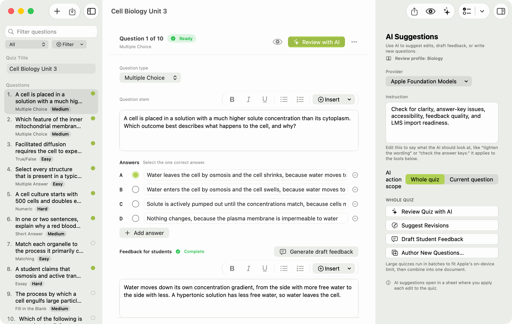
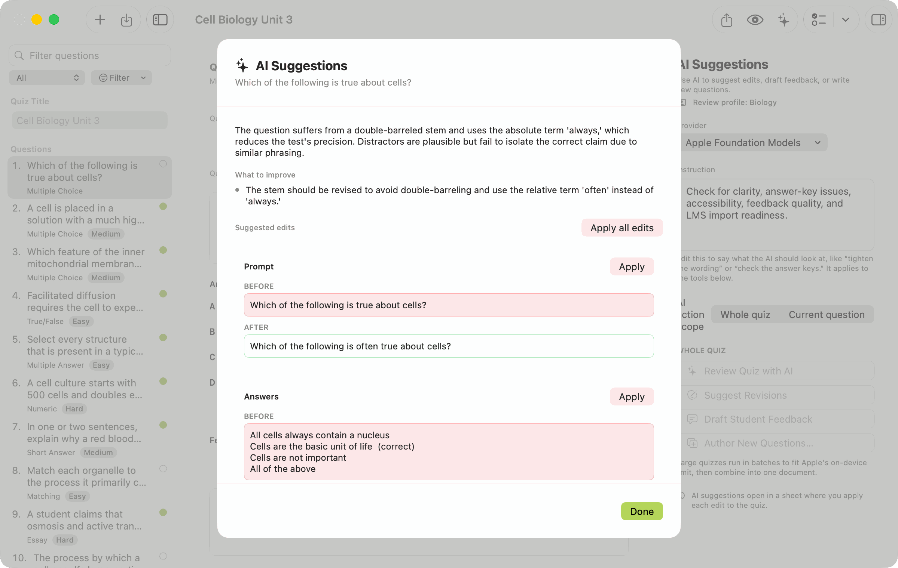
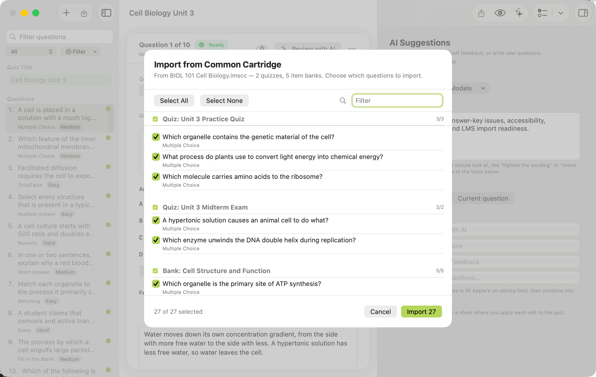

Write better quizzes. Open them in any LMS.
A free Mac app for writing rich, accessible quizzes and moving them in and out of whatever you teach with. It speaks the open QTI and Common Cartridge formats, so your questions go straight into Canvas, Brightspace, Blackboard, Moodle, and the rest. It tunes itself to your discipline, optional AI helps you sharpen each question, and nothing you write ever leaves your Mac.

Open formats, not a walled garden
Write it once. Open it wherever you teach.
QTI and Common Cartridge are open formats that every major learning platform can read, not one company's private feature. Quiz Editor reads and writes them carefully, so a quiz you write today still opens cleanly if your school switches platforms next year.
Imports and exports: Canvas, Brightspace, Blackboard, Moodle, D2L, and any system that speaks QTI or Common Cartridge.
Maps to competencies: tie questions to a framework like NCLEX, ABET, CSWE EPAS, or Bloom's, define your own, and get a coverage report that shows where the gaps are.
Every QTI export is checked before it is written: well-formed XML, a consistent manifest, and a clean re-import that yields the same questions. Problems surface in the app, not after you upload.
Authoring
A real editor for every kind of question.
Multiple choice, multiple answer, true/false, fill-in-the-blank, short answer, essay, matching, and numeric answers graded by a margin, a range, or precision. Write your prompts and feedback with proper formatting, images, tables, and links that stay intact when you export. An image can't leave the app until it has alt text.
- Tag, rate, and weight every question with topics, difficulty, and points.
- Link the whole item: tie a question to learning objectives, the sources it draws on, and a reusable case or passage written once and shared across questions.
- Find anything fast with live sidebar search, tag and difficulty filters, and a quick-switch palette.
- Reorder by dragging, duplicate in a keystroke, and undo any structural change.
# Or paste questions as plain text Type: Multiple Choice Question: Which organelle makes ATP? * Mitochondrion - Ribosome - Golgi apparatus Feedback: The mitochondrion runs cellular respiration.
Review & AI
A second read for your questions, not just your spelling.
A built-in check looks over every question as you write, right on your Mac, and points out the problems experienced test-writers watch for: a question with no correct answer marked, a "not" or "except" that's easy to miss, one answer that's tellingly longer than the others, an "all of the above," a missing feedback note. It needs no internet and sees nothing but your own file. Pick a discipline and these checks grow field-specific.
Want a closer look? The AI Assistant works on the whole quiz or a single question: it suggests a clearer rewrite you accept one field at a time, and drafts fresh questions, answer choices, and feedback. Use Apple's on-device models, connect your own AI service, or copy a prompt into any chatbot and paste the reply back. Long quizzes are paged into batches that fit Apple's on-device models and stitched back into one document, so length is never a wall. Your questions stay with you.

Discipline personas
Good questions are good in different ways. Pick your field.
A strong nursing item, a strong chemistry item, and a strong history item earn it for different reasons. Choose a discipline persona and the editor bakes in that field's item-writing practices across the whole app at once, while everything stays local, private, and accessible.
- Field-specific checks. The offline reviewer adds your discipline's rules, like a nursing "select all that apply" count cue, a chemistry answer missing its units, or a stigmatizing term where person-first language belongs.
- AI that knows the conventions. Reviews, rewrites, and drafted questions follow your field's voice, distractor strategy, and safety rules, and never invent a dose or a citation.
- Terminology, item types, and standards. Preferred wording, the question types your field leans on, and the competency framework it maps to.
- Yours to change. Every persona is editable and forkable in a guided editor, no JSON, and shareable as a single file. The built-ins are a starting point, not a cage.
Persona: Nursing
Health
Natural sciences
STEM
Social sciences
Humanities
Twenty-one built in, plus any you write yourself.
Import & export
Bring questions in. Send your quiz wherever it needs to go.
Import a QTI .zip, a Common Cartridge, or plain text you've marked up by hand. Pull in exactly the questions you want, whether that's a whole course package or a single question bank, and combine questions from several files into one quiz.
When you're done, send it out three ways: up to your LMS as a standards-clean QTI file, into a document you can share or edit, or onto paper as a print-ready exam with its own answer key.
- A question picker with search, select-all, and a preview of each question before anything is added.
- A read-only question bank that gathers every question across a folder of saved quizzes.
- Exports that are checked before they're written, so what lands in your LMS is what you wrote.

Accessibility
Accessible is the floor, not a feature.
Quiz Editor speaks the Mac's own accessibility language, the same one Apple builds into every app, and it works that way from the first launch, not as a follow-up.
- VoiceOver reads every control by name, and announces changes, like a saved export or a flagged question, as they happen.
- Full keyboard control, with a clear focus ring on whatever you're working with.
- Dynamic Type is respected, so the whole interface grows when you make text larger in System Settings.
- Reduce Motion and Increase Contrast are honored, so the app matches the way you've set up your Mac.
- Color is never the only signal. A correct answer carries a mark and a label, not just a hue, and so does every quiz you make.
- Alt text is required on every image before it can be exported, unless you mark it decorative on purpose.
Private by design
It all stays on your Mac.
There's no account to make, no server to sign in to, and nothing is uploaded anywhere. You can write, review, and export an entire quiz with the Wi-Fi off. Your quizzes are ordinary .quizeditor files that you can back up, email, and keep for as long as you like. It's built entirely on Apple's own frameworks, so there's nothing extra to install or trust, and it's free and open source under the MIT license.
Get it
Download it and open it.
Grab the latest release for your Mac, drag it to Applications, and you're writing quizzes. It's signed and notarized by Apple, so it opens with a double-click, no warnings, no command line. macOS 14 (Sonoma) or later. Free, now and always.
Rather build it yourself? It's one command with a Swift 6 toolchain: swift run QuizEditorApp from a clone of the repository.
Lend a hand
You don't have to be a programmer to help.
This is a small, open project, and the best ideas come from people who actually write and give quizzes. If you've ever thought "I wish it could …," that's exactly the kind of thing worth sharing. Here are a few easy ways in.
- Suggest a feature or report a snag. Open an issue on GitHub and just describe it in plain words. No special format, no code, no jargon required. Telling us what tripped you up is genuinely useful.
- Improve the words. A confusing label, a typo, a help note that could be clearer: small wording fixes make the app better for everyone, and they're a friendly first contribution.
- Try building a change with AI. Tools like Claude or ChatGPT are great at helping you find the right file and draft a small edit, even if you've never opened Xcode. Take your time, and don't worry about getting it perfect, that's what review is for.